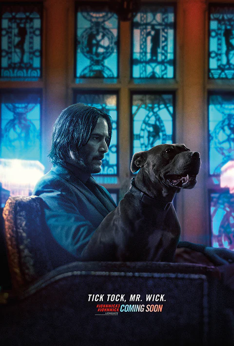
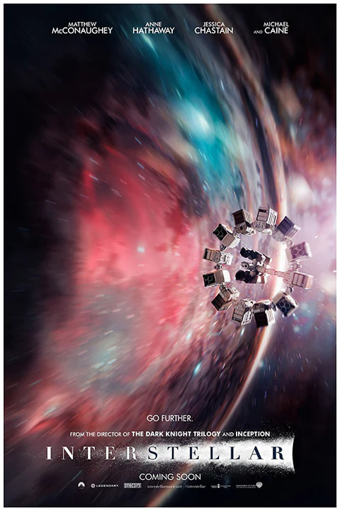

| Cover Image | Name | Description | Genre | Rating |
|---|---|---|---|---|
|  | John Wick |
"John Wick" is an action-thriller movie that was released in 2014. The movie is directed by Chad Stahelski and David Leitch and stars Keanu Reeves as the titular character, John Wick. The story revolves around John Wick, a former hitman who retired after falling in love with his wife. However, when his wife dies, she leaves him a puppy to help him cope with his grief. Unfortunately, the son of a powerful gangster, Iosef Tarasov (played by Alfie Allen), breaks into John's house, steals his car and kills the puppy. This sets John on a path of revenge against Iosef and his father Viggo Tarasov (played by Michael Nyqvist) and their entire criminal organization. |
Action, Drama |
IMdb 9.3 |
|  | Interstellar |
"Interstellar" is a science-fiction movie directed by Christopher Nolan and released in 2014. The movie stars Matthew McConaughey, Anne Hathaway, and Jessica Chastain. The story is set in a future where the Earth is facing a crisis due to a blight that is killing off crops and causing widespread famine. McConaughey plays Cooper, a former NASA pilot and engineer who is recruited by a team of scientists to embark on a mission to find a new habitable planet for humanity. Cooper leaves his family behind, including his daughter Murph (played by Mackenzie Foy and later Jessica Chastain), to join the mission, which is led by Dr. Brand (played by Hathaway). |
Action, Drama |
IMdb 9.3 |